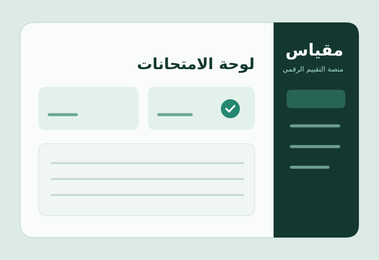

06 / Digital assessment
Miqyas
Create exams, take assessments, and review results.
An Arabic exam platform demo with separate student and teacher workflows.
Open the demo
The design challenge
Students need a clear path from finding an exam to submitting it and reviewing their score. Teachers need tools to manage questions, publish exams, and review submissions.
The design decision
The demo separates student and teacher views. Students can take exams and see results. Teachers can build exams from a question bank and review performance summaries.